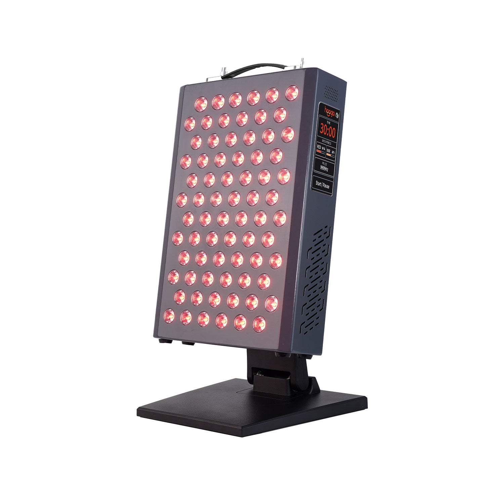
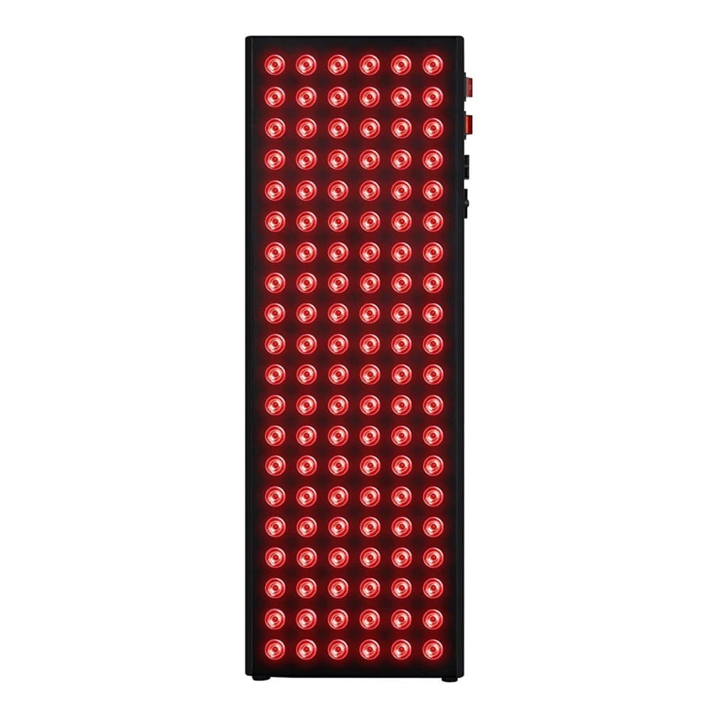
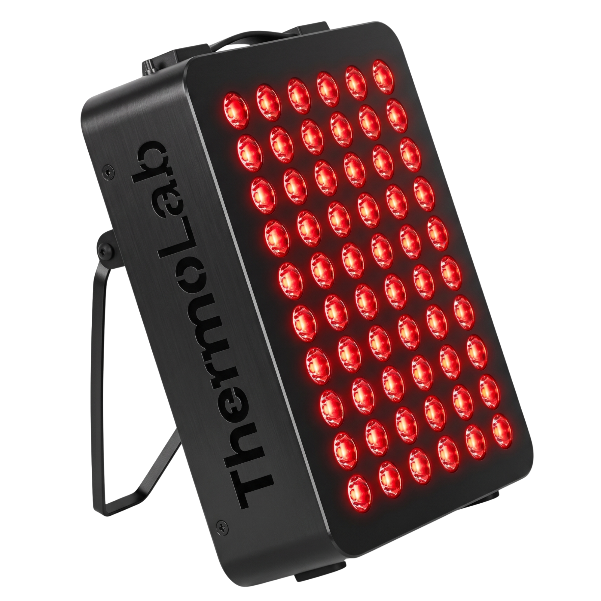
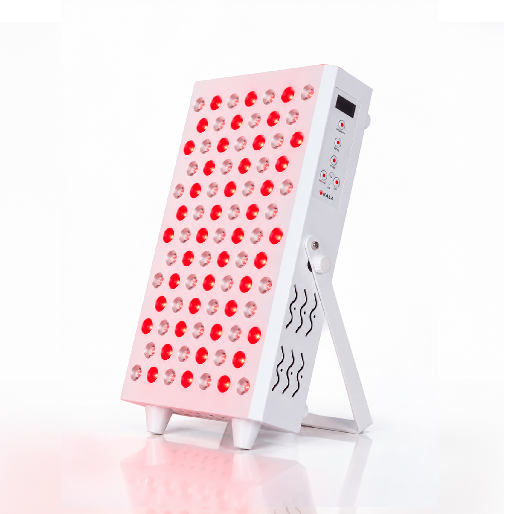
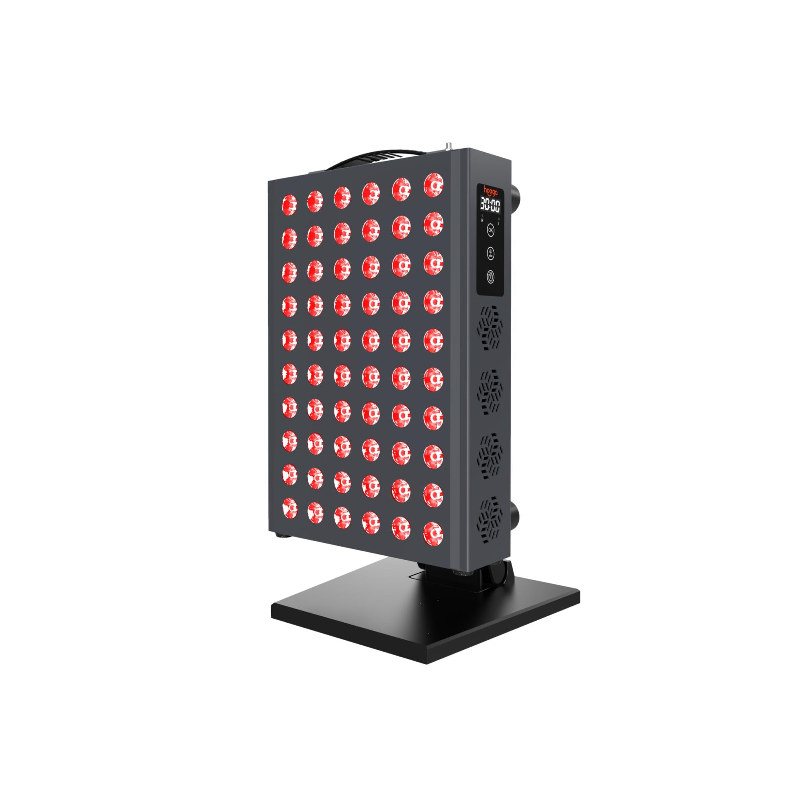
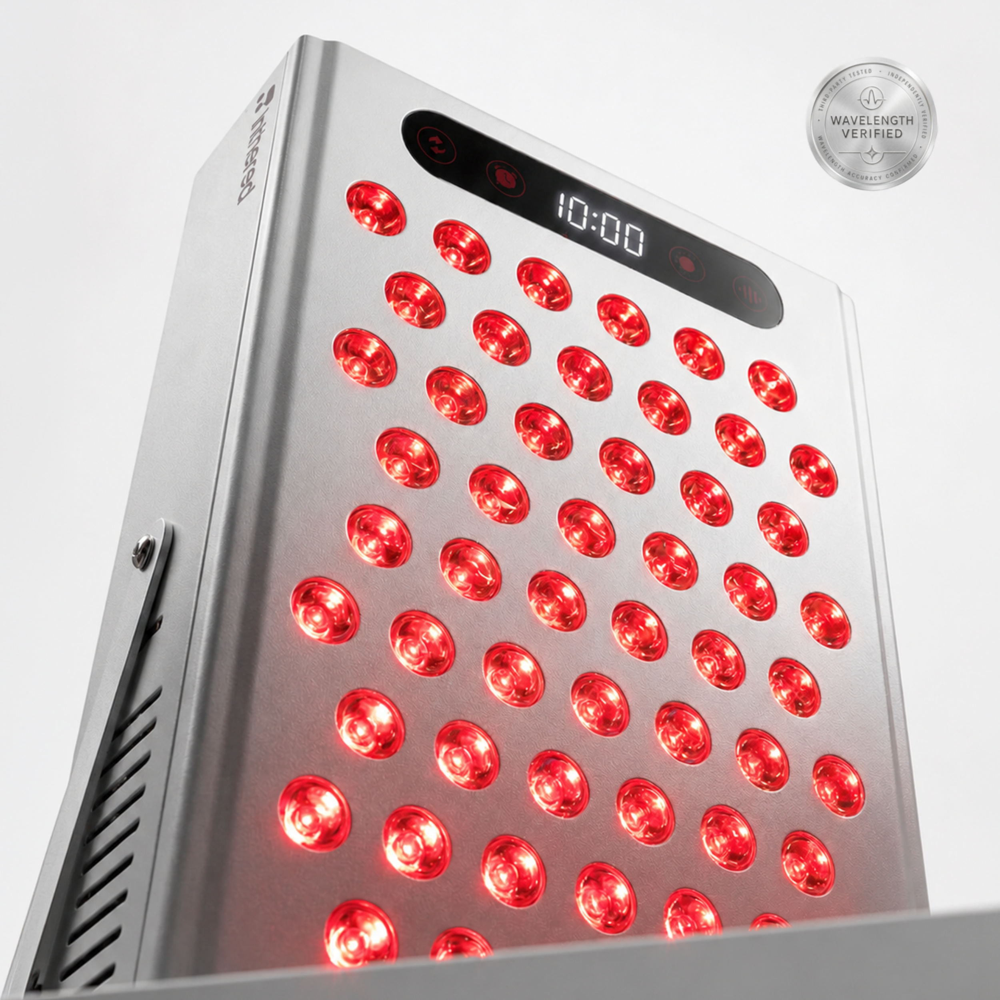
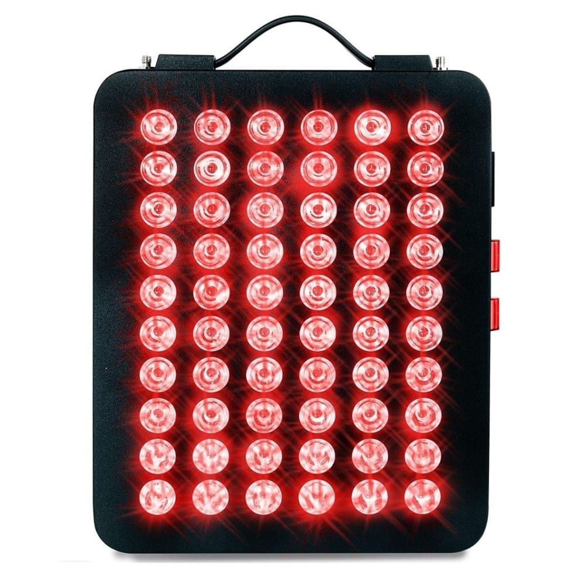
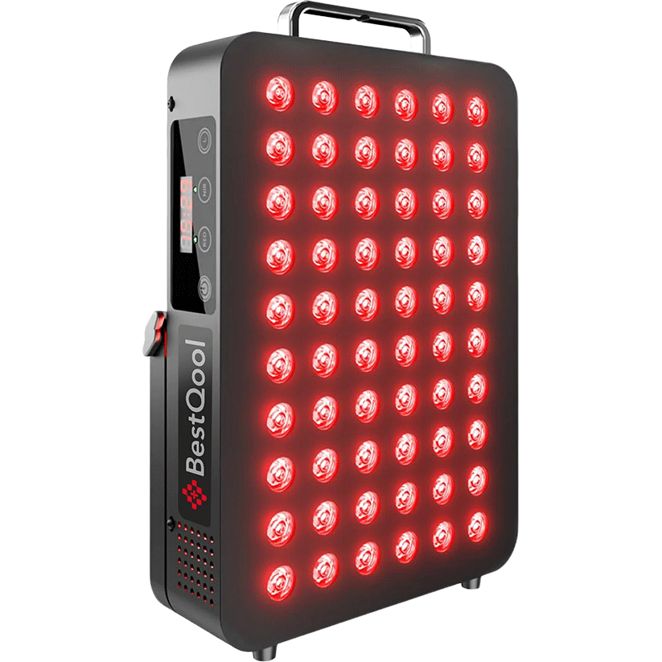
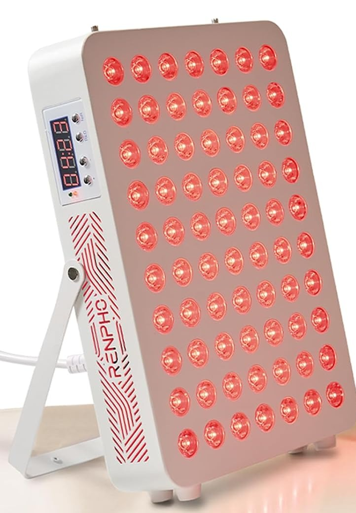
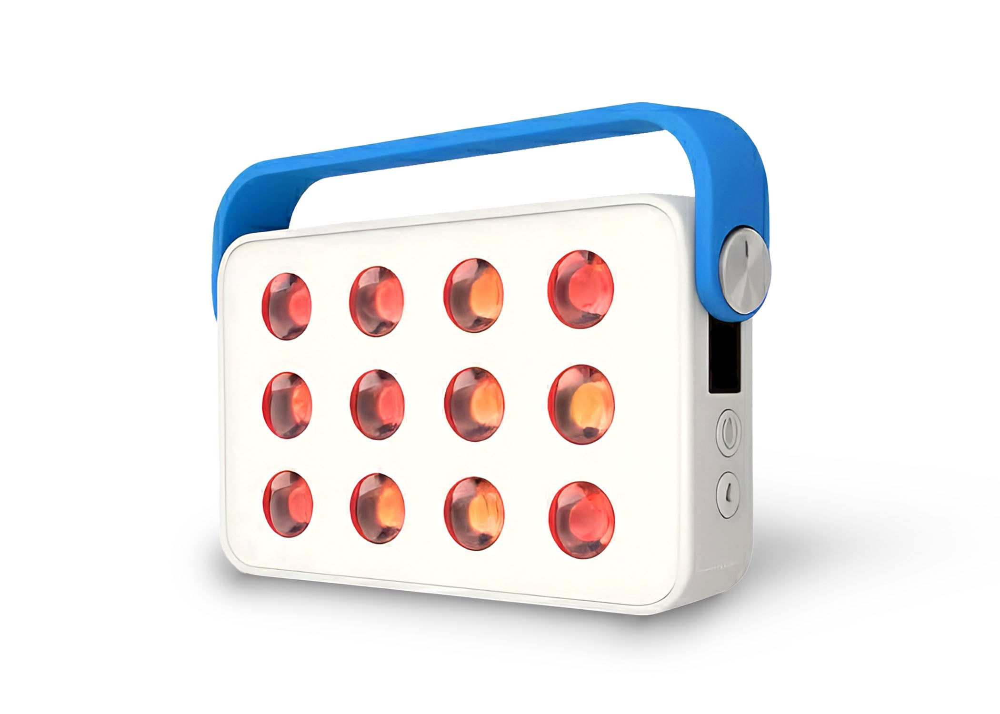

Red light therapy panels have moved from clinics to UK living rooms, but listings are full of wattage claims that don't tell you much. This guide ranks ten panels you can buy on Amazon.co.uk today, from compact 300W-class units for face and joints to taller panels and one cordless option, using numbers you can check yourself.
How we ordered this list: we ranked on publicly verifiable information. That means manufacturer-published wavelengths, LED type, irradiance and the distance it is measured at, warranty, UK availability and support, and the number of Amazon.co.uk ratings seen on 9 November 2026. These are not PickWise lab scores, and we have not run controlled tests of these panels for this guide. Amazon buttons are plain amazon.co.uk links.
Related reading: red light therapy hub, red light therapy top 10, methodology.
Last updated: November 2026 · 10 products compared
Editorial Disclosure: PickWise Reviews may earn commissions from affiliate links in future. Rankings stay independent of merchants. Affiliate disclosure.
Safety note: Red and near-infrared panels sold for home use are wellness devices. Nothing in this guide is medical advice, and brands' benefit claims are their own. Wear the eye protection supplied and never stare into the LEDs. Speak to your GP or pharmacist before use if you are pregnant, are on photosensitising medication, have a light-sensitive skin condition or a history of skin cancer, or have epilepsy (pulse modes can flicker). Keep sessions within the manufacturer's guidance and stop if you notice irritation.
#1 · Editor's Choice · Best Overall · Hooga

Image source: https://hoogahealth.com/products/ultra-360
The most fully specified compact panel in this round-up. Every one of its 72 LEDs carries four chips (630, 660, 810 and 850 nm), and Hooga publishes a full irradiance-by-distance table rather than a single headline number. Touchscreen controls let you set red and near-infrared brightness separately, plus a 1–30 minute timer and pulse mode. It sits on a tabletop stand and is sized for face, neck, shoulders and joints rather than whole-body sessions. It leads this list on published specs, its three-year warranty and a solid Amazon.co.uk review base (4.6★ from 182 ratings on 9 Nov 2026).
#2 · Best Large Panel from a UK Company · Nebula

Image source: https://nebula-appliances.com/product/nebula-led-red-light-therapy-lamp-600w
If you want more than a face-and-shoulders panel, this is the bigger option here from a UK company (Vipertech Ltd, Peterborough). At 62 × 21 cm with 120 dual-chip LEDs it covers a much taller area in one session, and separate red and NIR switches let you run either or both. Nebula's UK manual quotes above 101 mW/cm² at 6" and 67 mW/cm² at 12". The trade-off: owner reviews on Nebula's own site point out there is no built-in timer, so you will need a plug timer or a phone alarm.
#3 · Best Value · UK Brand · ThermoLab

Image source: https://thethermolab.com/products/thermolab-aura-pro-300w
A UK-designed, UK-stocked 300W-class panel that is also sold through B&Q's marketplace. That is a useful signal for buyers who want a UK returns route. ThermoLab includes a door and wall suspension kit plus blackout goggles, uses a UK 3-pin cable and backs the panel with a three-year UK warranty. On 9 Nov 2026 it had the highest Amazon.co.uk rating of any panel in this round-up (4.7★, 97 ratings). As with every "300W" panel, that figure describes electrical rating, not light output.
#4 · Best for Taller Coverage · Kala

Image source: https://kalaredlight.com/products/kala-red-light-pro-panel
A Canadian brand that has built UK distribution through wellness retailers including Healf and The Wellness London. The Pro Panel uses 85 LEDs at 660 nm and 850 nm (138W, per Kala), stands on its own built-in stand and adds a digital display with 10/15/20-minute timers and Kala's Pulse Recovery+ frequency modes. It is a step up in size from the 300W-class panels below. Prices differ a lot between Amazon.co.uk and UK retailers, so check before you buy.
#5 · Best Targeted Panel with Stand · Hooga

Image source: https://hoogahealth.com/products/hgpro300
Hooga calls this its most popular panel, and it is the simpler sibling of the ULTRA360. You get 60 dual-chip LEDs with 660 nm and 850 nm from every LED (no 630/810 nm), a published 109 mW/cm² at 6", a digital timer, a carry handle and an adjustable tabletop stand in the box. Choose it over the ULTRA360 if you don't need four wavelengths or independent brightness control. It has the same three-year warranty.
#6 · Most Transparent Specs · Inthered

Image source: https://getinthered.com/products/itr-evo
A newer UK-supported brand that focuses on proof. Inthered says its >156 mW/cm² figure is measured at the panel surface and checked by an independent third party, and it publishes a safety and quality report. In practice you get 60 dual-chip LEDs behind 30° lenses, an aluminium body, touchscreen modes (red, NIR or both), four brightness steps, 10/20/40 Hz pulse and a 5–30 minute auto-off timer. It ranks mid-table only because it is new: four Amazon.co.uk ratings on 9 Nov 2026.
#7 · Best Compact All-Rounder · Nebula

Image source: https://nebula-appliances.com/product/nebula-led-red-light-device-300w
The compact version of our #2 pick, and the most complete kit in the box at this size. Nebula ships a foldable tabletop stand, a door bracket, a wire hanging kit, rope hangers, goggles and a UK mains cable, and it has a built-in timer, which the NB600 lacks. Nebula quotes over 122 mW/cm² at 6". It is a sensible first panel if you mainly want face and upper-body sessions.
#8 · Best Simple Touch Controls · BestQool

Image source: https://www.bestqool.com/products/red-light-therapy-bq60
BestQool is one of the more established panel makers, and the BQ60 is part of its Original Series: 60 dual-chip LEDs, a digital timer and three modes (660 nm, 850 nm or both). The Amazon.co.uk listing quotes up to 95.6 mW/cm² at 3" and includes a U-shaped stand, door hook and hanging cord. BestQool's irradiance is quoted at 3" while most rivals quote 6", so don't compare the headline numbers directly.
#9 · Best Known-Brand Budget Pick · RENPHO

Image source: https://www.amazon.co.uk/dp/B0H25WL8CR
RENPHO is a familiar name from bathroom scales and massagers, and this tablet-sized panel is its first broad push into red light therapy on Amazon.co.uk. It packs 70 dual-chip LEDs (660/850 nm, 1:1) with single or combined modes, a built-in fold-out stand, a sling for drill-free door hanging, a six-setting timer and a cooling fan. RENPHO's 180 mW/cm² figure is measured at point-blank range, so treat it as a best case.
#10 · Best Cordless / Travel · Ocushield

Image source: https://www.ocushield.com/products/portable-red-light-therapy-panel-by-ocushield
This is the only cordless option here, from UK brand Ocushield, a certified B-Corp founded by eye-care professionals that appeared on BBC Dragons' Den in 2021. It is a small 12-LED unit (630/660 nm red, 830/850 nm NIR) with an 8,000 mAh battery and a timer, designed for face, eye-area and spot sessions at 15–30 cm. It is far less powerful and covers far less than a mains panel. Buy it for portability, not coverage.
Manufacturer-published figures; irradiance distances differ by brand.
| # | Product | Wavelengths | LEDs | Published irradiance | Format | Warranty | Amazon.co.uk rating (9 Nov 2026) | |
|---|---|---|---|---|---|---|---|---|
| 1 | Hooga ULTRA360 | 630/660 + 810/850 nm | 72 quad-chip | 136 mW/cm² @ 6" | Targeted, tabletop stand | 3 yrs | 4.6★ (182) | Check Price → |
| 2 | Nebula NB600 600W Red Light Therapy Panel | 660 + 850 nm | 120 dual-chip | 101 mW/cm² @ 6" | Tall (62 cm), hang/trolley | 1+1 yrs | 4.4★ (184) * | Check Price → |
| 3 | ThermoLab Aura Pro 300W | 660 + 850 nm | 60 | 120 mW/cm² @ 6" | Targeted, hang kit | 3 yrs UK | 4.7★ (97) | Check Price → |
| 4 | Kala Red Light Pro Panel | 660 + 850 nm | 85 | Not given by distance | Half-body, built-in stand | See retailer | 4.6★ (39) | Check Price → |
| 5 | Hooga PRO300 | 660 + 850 nm | 60 dual-chip | 109 mW/cm² @ 6" | Targeted, stand | 3 yrs | 4.6★ (14) | Check Price → |
| 6 | Inthered ITR-EVO 300W | 660 + 850 nm | 60 dual-chip | 156 mW/cm² @ surface | Targeted, tilt stand/hang | 1 yr | 4.2★ (4) | Check Price → |
| 7 | Nebula NB300 300W Red Light Therapy Panel | 660 + 850 nm | 60 dual-chip | 122 mW/cm² @ 6" | Targeted, stand + hang | 1+1 yrs | 4.4★ (184) * | Check Price → |
| 8 | BestQool BQ60 (105W) | 660 + 850 nm | 60 dual-chip | 95.6 mW/cm² @ 3" | Targeted, stand + hang | See listing | 4.6★ (25) | Check Price → |
| 9 | RENPHO 70-LED Red Light Therapy Panel | 660 + 850 nm | 70 dual-chip | 180 mW/cm² @ 0" | Targeted, built-in stand | See listing | 4.6★ (11) | Check Price → |
| 10 | Ocushield Ocuglow Portable Red & Infrared Panel | 630/660 + 830/850 nm | 12 | 130 mW/cm² @ 7.6 cm | Cordless handheld | 1 yr | No ratings yet | Check Price → |
* Nebula 300W and 600W share one Amazon.co.uk review pool.
Check four things: the wavelengths (most panels here use 660 nm red and 850 nm near-infrared), whether the LEDs are dual-chip, the irradiance figure and the distance it was measured at, and the warranty and UK support. The wattage in a product name is the electrical rating, not the light output, so a "300W" panel does not emit 300W of light.
Brands measure at different distances: at the surface, at 3", at 6" or at 12". Irradiance falls as you move back, so 180 mW/cm² at point-blank is not better than 109 mW/cm² at 6". Compare figures quoted at the same distance, and treat any number without a distance as marketing.
Most panels in this list let you run 660 nm red, 850 nm near-infrared or both. Manufacturers generally position red for skin-surface routines and near-infrared for deeper-tissue or recovery routines. Separate switches or modes are useful if you want to use one at a time.
Manufacturers in this round-up typically suggest about 10–20 minutes per area, 3–5 times a week, at roughly 15–30 cm (6–12") from the skin. Follow the manual for your specific panel, because recommended distances and times differ.
These are consumer wellness devices. They are not a substitute for medical advice or treatment. Use the goggles supplied, don't stare into the LEDs, and speak to your GP or pharmacist first if you are pregnant, have a light-sensitive condition, take photosensitising medication, have a history of skin cancer, or have epilepsy (some panels have pulse/flicker modes). Stop if you notice irritation or discomfort.
Not usually for a first panel. Targeted 300W-class panels like the Hooga PRO300, ThermoLab Aura Pro or Nebula NB300 suit face, neck, shoulders and joints and are easier to store. Taller panels like the Nebula NB600 or Kala Pro Panel cover more of the body in one session but take up more space.
Amazon.co.uk prices for these panels change often and vary between sellers. Use the Check Price button for today's price and check the seller, warranty and returns before you buy.
For most UK homes, a targeted panel such as the Hooga ULTRA360, ThermoLab Aura Pro 300W or Nebula NB300 is the practical starting point. Go for the Nebula NB600 or Kala Pro Panel if you want more coverage, or the Ocushield Ocuglow if you need something cordless. Browse more in our red light therapy hub.